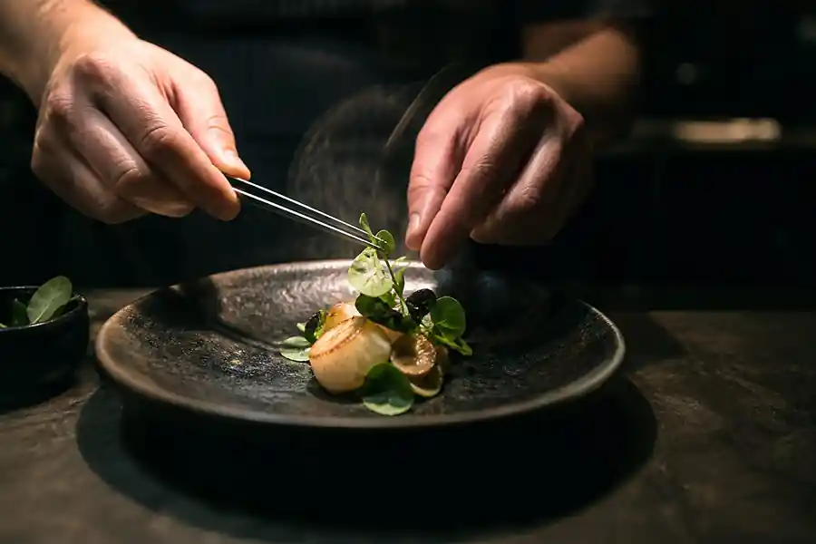

Between Seasons
한 달에 한 번,
식탁이 바뀝니다
계절이 넘어가면 메뉴도 넘어갑니다. 사잇길은 매달 새 메뉴를 짜고, 그 달의 재료에 맞춰 스타터부터 파스타, 메인과 디저트까지 다시 구성합니다. 같은 계절에 두 번 오셔도 다른 저녁이 되는 이유입니다.
“계절과 계절 사이에 놓인 길.”
이름처럼, 사잇길은 지금 이 계절에만 맛볼 수 있는 것들을 한 상에 올립니다.
100%예약제 운영
Monthly매달 새 메뉴
4.8카카오맵 별점
5.0구글 평점
